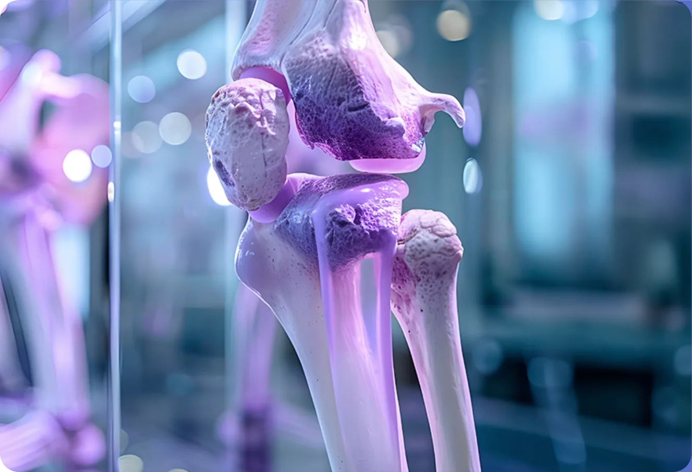

Documento científico
Calculadora de ingestão de cálcio
Avalie a ingestão diária de cálcio de forma prática e identifique possíveis necessidades de adequação.
Uma ferramenta para apoiar a avaliação da ingestão de cálcio e contribuir para uma abordagem individualizada da saúde óssea.
Acessar calculadora →